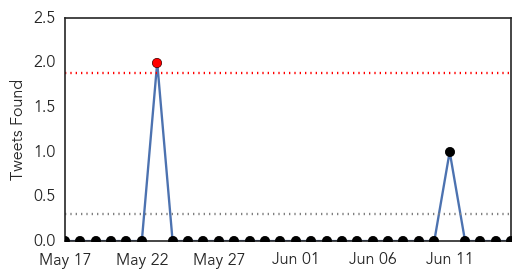

30 Day Trends
Web: 0 alerts, 0 warnings
Twitter: 1 alerts, 0 warnings
Top Articles:
- 1.000
- Middle East respiratory syndrome coronavirus (MERS-CoV)
- 0.997
- First case of MERS in Bangladesh
- 0.996
- The Voice of Russia: News, Breaking news, Politics, Economics, Business, Russia, International current events, Expert opinion, podcasts, Video
- 0.993
- Bangladesh Reports First Case of Deadly MERS Virus
- 0.991
- Killer virus demands open accounting
- 0.982
- Bangladesh reports first case of MERS virus
- 0.982
- Bangladesh reports first case of MERS virus
- 0.978
- Bangladesh reports first case of MERS virus
- 0.978
- Farsnews
- 0.976
- Bangladesh reports first case of MERS infection
- 0.972
- Bangladesh reports first case of MERS virus
- 0.972
- Bangladesh reports first case of Mers infection
- 0.972
- Bangladesh Reports First Case Of MERS Infection
- 0.968
- First MERS case confirmed in Bangladesh
- 0.962
- First MERS case confirmed in Bangladesh
- 0.962
- First MERS case confirmed in Bangladesh
- 0.958
- Bangladesh reports first case of Mers virus - Emirates 24
- 0.910
- MERS detected first time in Bangladesh
- 0.659
- First case of MERS virus in BD
- 0.580
- Bangladesh Reports First Case of MERS Infection
Top Tweets:
-
No tweets found for Jun 15, 2014
Web/News Articles

Tweets
Article Locations

Article Confidences